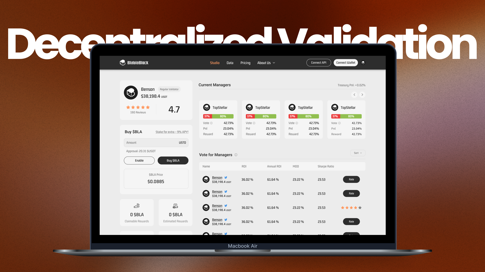

一個透過「去中心化驗證」機制運作的跟單交易平台。產品目標是解決傳統社群交易平台中經理人透過高風險操作、人為操縱排行榜等方式獲取曝光的問題，並建立一套能夠持續篩選優秀經理人的驗證機制。透過投票、績效驗證與獎勵制度，讓投資人、經理人與平台三方利益保持一致，打造更健康的跟單交易生態。

擔任 UI/UX Designer，負責產品介面設計與流程優化。主要工作包含：User Flow 規劃、Wireframe 設計、功能優化提案、Mockup 與 Prototype 製作、用戶訪談、可用性測試。
由於產品早期版本主要由工程團隊開發，因此我加入後的重點在於重新檢視使用流程，降低新手理解門檻，並協助團隊優化關鍵功能體驗。
透過問卷調查與市場研究，我們發現超過 75% 的跟單交易用戶最終處於虧損狀態。進一步分析後發現問題並非來自跟單機制本身，而是使用者難以判斷：哪些經理人值得信任？
分析市場上兩種主流模式，比較其優勢與缺點：
| 模式 | 資產管理服務 | 社群交易服務 |
|---|---|---|
| 說明 | 由專業團隊代為管理資產 | 透過公開排行榜挑選經理人 |
| 優勢 | 操作門檻低 | 資訊透明、可查看交易紀錄 |
| 缺點 | 資訊不透明、無法驗證經理人能力、資金風險較高 | 排行榜容易被操縱、高風險策略容易獲得曝光、使用者仍需投入大量研究成本 |
我們決定不再讓平台直接替使用者選擇經理人，而是建立一套「由社群共同驗證經理人」的機制，讓市場自行篩選出優秀交易者。
透過可用性測試發現，使用者難以理解：投票流程、權重計算方式、經理人績效差異。因此重新設計了兩個關鍵體驗：
這是我在產品設計領域較早期的完整參與經驗，讓我對跨職能協作有了更深的理解：